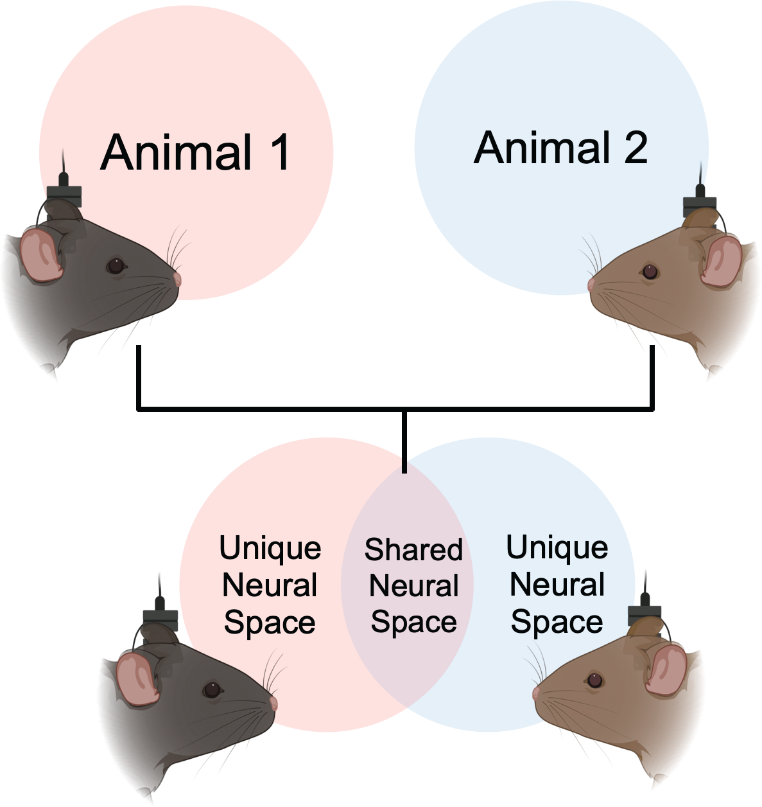
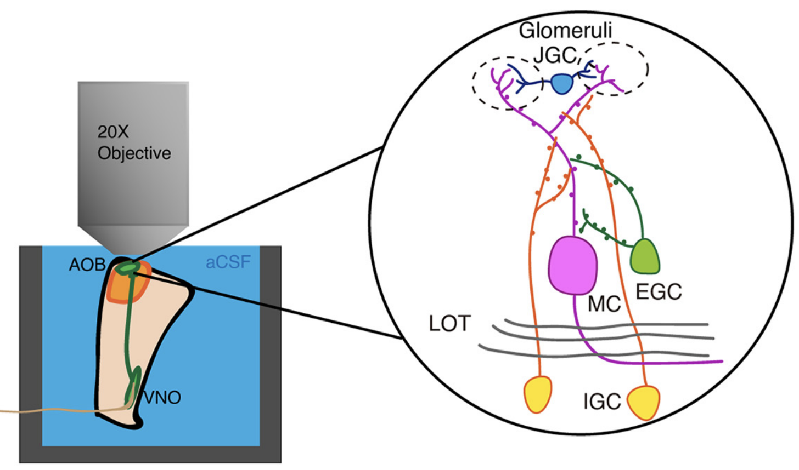
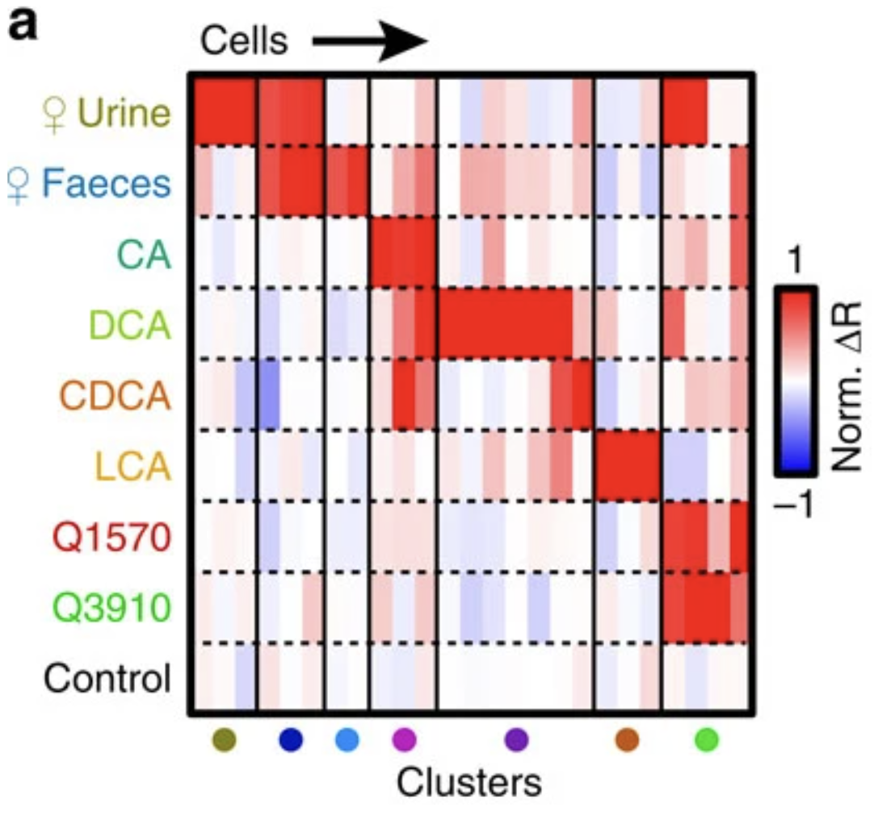
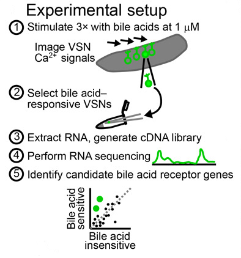

|
Xingjian Zhang
I am a computational neuroscientist with multiple peer-reviewed publications on top scientific journals. I specialize in data analysis and computational modeling using statistics and machine learning for insightful research and innovative problem-solving. |

|
Research |
|

|
Inter-brain neural dynamics in biological and artificial intelligence systems
Zhang, X., Phi, N., Li, Q., Gorzek R., Zwingenberger, N., Huang, S., Zhou, J.L., Kingsbury, L., Raam, T., Wu, E.Y., Wei, D., Kao, J., Hong, W project page Nature, 2025 We developed a computational framework based on extensive simultaneous multi-animal neural recording data collected from interacting mice. Using this computational framework, we effectively extracted and studied the shared interbrain social neural dynamics. We also studied the relations between social neural dynamics and behavior using a feature-rich posture tracking dataset. We created multi-agent environment and trained RNN-based artificial agents to model social interaction. In agents, we observed similar ‘neural’ dynamics as the animals, suggesting the necessity of such dynamics in interacting systems. |
|

|
Paradoxically sparse chemosensory tuning in broadly integrating external granule cells in the mouse accessory olfactory bulb
Zhang, X. and Meeks, J.P. J. Neuroscience, 2020 I investigated external granule cells (EGCs), a type of inhibitory interneuron, in the pheromone sensing system. Using a specialized ex vivo calcium imaging setup, I characterized and compared the tuning properties of EGCs and excitatory neurons. I also thoroughly studied the electrophysiological properties of EGCs. I found that surprisingly EGCs are only responsive to strong composite chemical stimuli, which may be caused by exceptionally high firing threshold. I pioneered highly challenging whole-cell patch clamp recording on brain dissection sample while presenting the chemical stimuli. I successfully recorded stimulus-evoked subthreshold activities thus confirmed the hypothesis. |
|

|
Faecal bile acids are natural ligands of the mouse accessory olfactory system
Doyle, W.I., Dinser, J.A., Cansler, H.L., Zhang, X., Meeks, J.P. et al. Nat. Communications, 2016 We discovered a novel family of mouse pheromone – bile acids. I successfully recorded bile acids evoked calcium activity in sensory neurons using objective coupled planar illumination microscopy. |
|

|
Physiology-forward identification of bile acid–sensitive vomeronasal receptors
Wong, W. M., Cao, J., Zhang, X., Meeks, J. P. et al. Science Advances, 2020 We developed a physiology-forward identification of vomeronasal receptors. I performed the glomerular imaging of accessory olfactory bulb and characterized the responsiveness of vomeronasal ligands. |
Code
|
Awards
|
|
website template credit |